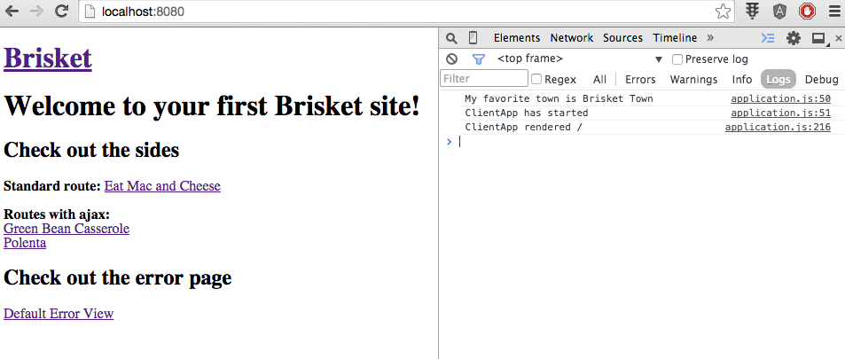
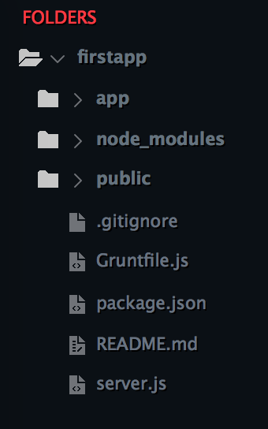

Fork the Brisket
Following previous article in which we tasted Bloomberg’s Brisket let’s now fork the repo from github, clone on to our machine and look at the code.
Assuming you have Git installed, to clone directly from Bloomberg’s Github open your terminal and run the following:
1 | git clone https://github.com/bloomberg/brisket.git |
Or, assuming you have node.js and node package manager npm, install Yeoman:
1 | npm install -g yo |
To install generator-brisket run:
1 | npm install -g generator-brisket |
Create a directory for your application:
1 | mkdir firstapp |
Generate using previously installed Yeoman:
1 | yo brisket |
Run your application via grunt:
1 | grunt |
The Brisket application will be available at port 8080. This is how it looks like in the browser. Note the Chrome browser developer tools on the right showing console logging from the code shown below:

Let’s take a look at the folder structure. This is how it looks right after generating:

After expanding folder structure under app/javascripts you can see the contents of ServerApp.js and ClientApp.js:

You can see above separate files for ServerApp.js and ClientApp.js. Those files provide ability to customize your server and client - unshared 10% of the codebase for each one.
Brisket provides Express.js engine and it’s built on Backbone.js which uses routers to assemble models and views in order to write to the page. In Brisket routers are responsible of returning Backbone view.
First request from the browser is sent to Express.js which then forwards the request to your application (also called backbone rendering engine). It takes request as an input and returns a single view.
Brisket uses promises instead of callbacks so after fetching data it returns a promise of a view. Eventually the view is passed to the server renderer and combined with the layout then returned back to the browser as HTML.
When the browser receives the view, the application picks up where it left off (after initial request), and can handle user input. Any user manipulation (second request) is handled by the application in the browser rather than going all the way to the server.
The application works the same as on the server because it can accept requests and returns views which are sent to the client renderer which updates the layout.
Search Engine Optimization SEO is critical for Bloomberg therefore Brisket provides a functionality to add title and meta tags in an easy way.
You can find the documentation in the readme file at https://github.com/bloomberg/brisket